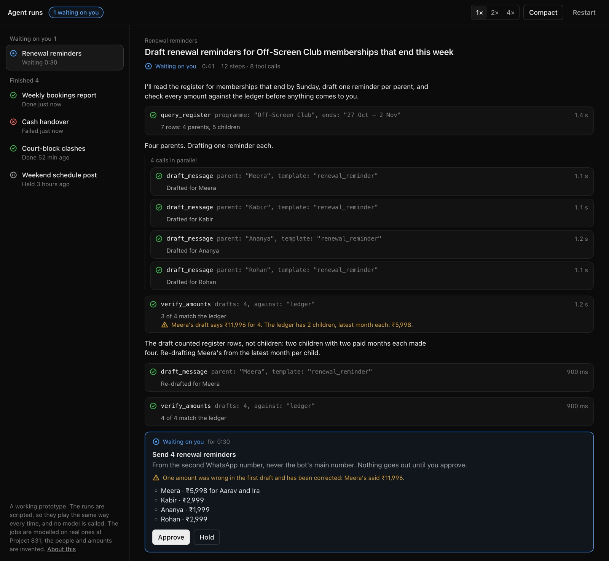

Skills and agents
Everything I've built for working with AI agents, in one place. The skills I wrote, the ones I built on, the agents that run them, and the checks that make sure a person still decides.
A skill is a set of rules an agent loads at the moment they matter, instead of a document nobody opens. I write them for my own work, and for designers who don't write code.
The same three rules, everywhere
- One skill, one job. A skill that does everything gets loaded for everything and followed for nothing.
- The check comes with the work. The rule that matters loads in the same step as the build, not in a review afterwards.
- What must never happen is a hook, not a sentence. A prompt is a suggestion. A hook in code refuses the merge, the send or the push, whatever the agent thinks.
1. Helix: fourteen skills other designers use
At Travelopia most brands have one designer, and most of those designers don't write code. Helix puts each brand's design system in its real code, and the skills are how a designer works in it. One sets a brand up, one starts a design system from nothing, one turns an exploration into a real component.
The audit and the accessibility check load with every build, and that's enforced in four places, including a hook. The skills ship from one source to two harnesses, Claude Code and OpenCode, so a team can use either.
This is the part I'm proudest of. A designer goes from getting access to a first page merged into the brand's code in under an hour, and the first command is a skill. Sixteen people have shipped 290 changes through it.

2. Growth design: one skill on top of Helix's
How I work a growth ticket, written down as one skill: eleven steps from intake to readout, six of them stops where I decide. It pulls the evidence and writes the plan, and for the design itself it hands over to Helix's explore skill. It never draws, and it never merges. Each ticket adds to a learning log that the next ticket reads first. It has 25 entries so far.
Its first run was a paid landing page. 81.5% of paid visitors were on phones, so the photos went first.
3. The captain: five skills that work my queue
Four brands send me work through Slack, Jira and GitHub all day. The captain is a crew of agents that does the groundwork before I log on, and every draft comes to me.
- growth-opsThe morning run. It reads everything addressed to me and works each item in its own worktree through the growth-design and Helix skills. It posts nothing.
- copywriterWrites every reply in my voice, with the facts looked up first. It never posts.
- captain-evalReplays 46 real situations from my history blind and grades the crew against what I actually did.
- captain-learnReads what I changed in the week's drafts and proposes lessons as a pull request, with eval results attached. I merge it, or nothing changes.
- captain-interviewTurns my answers to its questions into decision rules the crew follows.
The gate is a hook that always refuses to merge. When I'm away it refuses every post that doesn't carry my approval. Trust is earned one desk at a time: 95% of the last 20 drafts going out unchanged, and the evals passing. The crew scores 10 of 46, so every desk is still at level one.

4. The application desk: five skills and a gate
I built this for my own job applications, including the one you might be reading this from. Scout sorts postings by my rules. Reader reads a posting the way its hiring manager would. Writer drafts only from a file of facts I can show. Editor checks every claim, then hands the answer to an agent with no context to see what a stranger takes from it.
The fifth skill is the gate, a hook with 67 tests. It refuses every submit, send, publish and push. The only way through is a one-off go I type myself, good for one action and ten minutes. The writer passed 5 of 8 blind answers against mine, so I read everything before it goes anywhere.
5. Project 831: rules for every AI tool on the team
My sports venue's software is the one where a mistake costs real money, because its database holds real bookings and payments. So the repo opens with a rules file that applies to every AI tool and every person on the team. Never put fake data in the database. Test in mock mode, where nothing leaves the browser. And the test suite fails any test that tries to reach a server.
Under that sits a memory of 98 facts, one per file. Each one is a correction I made once and never wanted to make again. 70% of the venue's 1,698 commits were co-authored with Claude Code. A design-system skill for its dashboard is written and on a branch; it isn't merged yet.
6. Built on other people's skills
Emil Kowalski's course, AI for Designers and Engineers, became two skills of mine. rkj-ui is how I build a screen, in order. It splits the course into six areas (foundations, forms, motion, polish, design systems and prototyping), with my own house rules on top. When I correct a screen, the fix goes into those rules too, so the next screen starts right.
rkj-ui-review checks a real page before I call it done. A script loads it at six widths in light and dark mode, and fails on overlaps, sideways scrolling, clipped text, small tap targets and broken images. Its first full run was on the application desk page, where it found phone problems I then fixed. The page now passes all twelve checks.
| Width | Light | Dark |
|---|---|---|
| 1920, 1440, 1280 | 0 findings | 0 findings |
| 1024, 860 | 0 findings | 0 findings |
| 390, a phone | 0 findings | 0 findings |
coss ui's own skill is how the court-booking app is put together. It uses all 55 of the library's components, composed the way the skill and its examples say. A one-line fix of mine to the library was merged.
7. Designing the screen for an agent
Agents need interfaces too, for the people who supervise them. Helix's Annotate tool turns notes pinned to a live page into one prompt for the agent, naming each component and file. And I built a prototype of one long agent run, where an approval is a step inside the run and a failure ends by saying what was left untouched. Its runs are scripted, and no model is called.

Every skill, in one table
| Skill | What it does |
|---|---|
| HELIX · used by sixteen people at Travelopia | |
helix | Reads the request and pairs the right skills |
helix-install | Installs or updates Helix in a brand's code |
helix-design-system-init | Starts a design system from nothing: tokens, themes, specimens |
helix-explore | A scratchpad with real tokens, permissive on purpose |
helix-exploration-promote | Turns an exploration into components and a layout |
helix-component | Builds or changes a component, any size |
helix-compose-layout | Assembles a page from real components |
helix-design-system-audit | Loads with every build |
helix-a11y | The accessibility gate; loads with every build |
helix-a11y-interactions | Tab order, focus, announcements, errors |
helix-visual-verify | Catches token drift and missing states |
helix-tool | Builds a new toolbar tool; refuses inside a brand's code |
helix-wireframe | Page structure before components exist |
helix-local-prune | Clears worktrees and dev servers; never touches the remote |
| GROWTH DESIGN | |
growth-design | Runs a ticket as growth work: metric, evidence, hypotheses, plan, readout |
| THE CAPTAIN | |
growth-ops | The morning run over Slack, Jira and GitHub; posts nothing |
copywriter | Replies in my voice, facts looked up first; never posts |
captain-eval | Grades the crew blind against what I actually did |
captain-learn | Turns my edits into lessons, as a pull request I merge |
captain-interview | Turns my answers into decision rules |
| THE APPLICATION DESK | |
scout | Sorts postings into apply, ask first or drop, quoting the posting |
reader | Reads a posting the way its hiring manager would |
writer | Drafts one answer, citing a fact for every claim |
editor | Fact-checks, scores, then a cold read with no context |
gate | Refuses every submit, send, publish and push; 67 tests |
| PROJECT 831 | |
design-system | Reuse the dashboard's parts and tokens before adding new ones (on a branch) |
| UI, BUILT ON EMIL KOWALSKI'S COURSE | |
rkj-ui | How I build a screen: six areas, plus my house rules |
rkj-ui-review | Checks a page at six widths in light and dark before it's done |
| OTHER PEOPLE'S, THAT I BUILD ON | |
coss | coss ui's skill; the court-booking app is built to it |
emil-design-eng | Emil Kowalski's design-engineering rules, next to mine |
Where it stands
The Helix skills are in daily use across Travelopia's brands. The captain runs every weekday, and every draft still comes to me. The desk has been used for real on one round of applications. No agent of mine acts alone yet, because the evals say it shouldn't: 10 of 46 for the captain, 5 of 8 for the desk. Getting those numbers up comes before letting anything send.